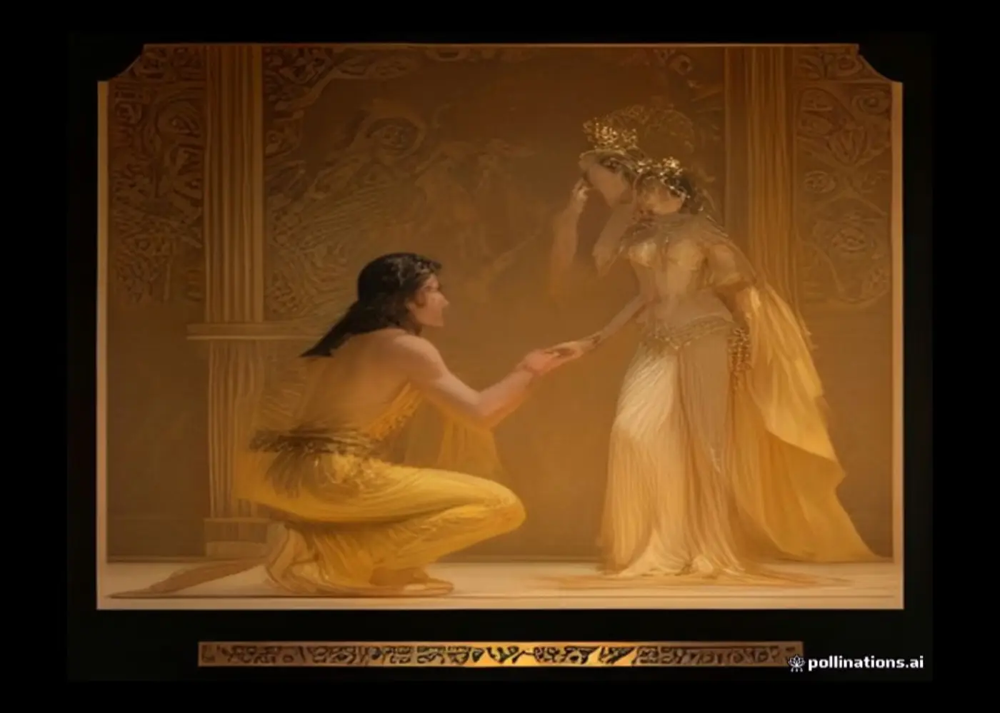
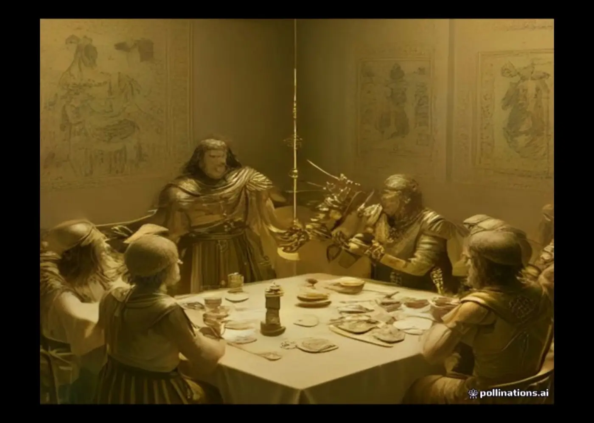

归档：2026年11月
序曲 · 金苹果之争

卷一 · 瘟疫与争吵

卷二 · 梦兆与全军检阅
宙斯没有忘记对忒提斯的承诺。当夜他遣一个"梦神"降到熟睡的阿伽门农枕边，假传神意：即刻出兵，明日便可攻陷特洛伊——因为诸神已经不再偏袒这座城。阿伽门农醒来深信不疑，全然不知这是个把他往深渊里引的假梦。
卷三 · 城头看海伦，阵前赌海伦
两军逼近，气氛肃杀。特洛伊一方突然提议：何必十年血战？让祸根自己了断——帕里斯与墨涅拉俄斯单挑，胜者带走海伦与全部财宝，两军盟誓休战。这提议得到应允，老年特洛伊王普里阿摩斯亲自出城主持盟誓。
卷四 · 盟誓破产，烽火重燃
奥林匹斯山上，宙斯与赫拉斗起了嘴。宙斯说：干脆讲和，海伦归希腊，特洛伊城留给你——总行了吧？赫拉恼怒地拒绝：我才不要一座将亡之城的施舍！在她心里，特洛伊早就该毁灭。宙斯于是顺水推舟：那就打下去——只是别怪我的雅典娜上阵去激起战端。
卷五 · 狄俄墨得斯的荣光
这一卷属于狄俄墨得斯——阿尔戈斯年轻的国王。雅典娜把勇气与力量灌进他的身体，又为他拨开眼前的迷雾，让他能认出下场的神祇：她叮嘱他，凡人的血肉尽管杀，不朽的神明则要避开，唯有一个例外。
卷六 · 赫克托耳与安德洛玛刻
战局胶着。狄俄墨得斯与吕基亚名将格劳科斯阵前相遇，互通姓名后发现：两家祖上是世交——祖父曾在阿尔戈斯款待过对方的祖父。两人当场掷枪为誓，交换了铠甲（因此后人笑说"宙斯夺走了格劳科斯的理智"——金甲换铜甲，亏大了），各自退开，不与对方兵刃相向。
卷七 · 埃阿斯单挑赫克托耳
特洛伊人重整旗鼓。先知赫勒诺斯灵光一现：何不让阵中最勇的赫克托耳向希腊人叫阵单挑？赫克托耳当即到两军阵前朗声喊话：我是普里阿摩斯之子赫克托耳！哪位希腊英雄敢与我单独对阵？胜者得尽战利，败者的遗体由本方安葬。全场寂静，无人应声——唯独墨涅拉俄斯挺身而起，被兄长阿伽门农按住：为一个帕里斯再赔上一个你？
卷八 · 宙斯掌秤，特洛伊反攻
翌日拂晓，宙斯召集众神立下严令：谁也不许插手今日之战，违者打入地狱。他自己登上伊达山巅，黄金天平两端各放特洛伊与希腊的命运砝码——希腊的一端沉向大地。天平一倾，他的雷霆劈在希腊军阵中央，天地变色。
卷九 · 使团求和
三位使者来到阿喀琉斯营中。他正在弹琴低唱英雄往事，见到老友起身相迎——哪怕在盛怒之中，他也以礼相待。宴罢，奥德修斯陈说军情：特洛伊人已逼到船边，希腊人的存亡系于英雄一身；随后他转述阿伽门农的道歉与厚礼——七城、女俘、金银，直至布里塞伊斯本人，还有战后共分战利、结为姻亲的许诺。
卷十 · 夜袭敌营
（研究者认为本卷为后人补入，但故事自成一体，且颇为精彩。）
卷十一 · 众将血战，英雄渐伤
破晓，宙斯把"争斗"女神放到希腊人的战船上，自己登上伊达山观战。白日之战异常惨烈：阿伽门农一马当先，连斩特洛伊名将，杀得敌军直退到城墙下——凡人在盛怒之下的爆发，几乎赶上了神明。但他的巅峰注定短暂：长矛伤臂、箭镞中腿，又中了枪，他被迫退出战场。
卷十二 · 壁垒失守
特洛伊人冲到壕沟前。这道壕沟既深且宽，沟上壁垒直插尖桩，战马难以跨越。天象也在帮特洛伊：波塞冬远在色萨利，宙斯亲手推波助澜——萨佩冬（宙斯与凡女之子，吕基亚王）对格劳科斯说出了全诗最豪迈的话：你我为何受人尊崇、坐拥良田美眷？因为我们必须站在最前列！人终有一死，不如在荣耀中战死。说罢两人率吕基亚人顶着箭雨扑向壁垒。
卷十三 · 船边的死斗
宙斯的目光暂时转向了别处。海神波塞冬抓住这个空档，化作老先知卡尔卡斯的样子，出现在阵中——他是阿伽门农的兄长辈，海之君主，岂能眼睁睁看着弟弟们的船被烧？他重振两名埃阿斯的士气，又奔赴各处激励将领，希腊人的阵线奇迹般地稳住了。